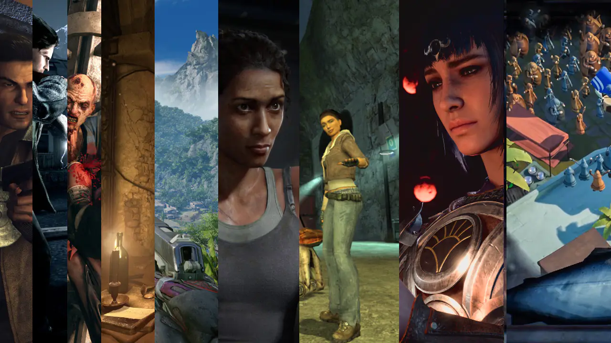

Hikayeli oyunlar, oyuncuları içine çeken derin anlatımı, karakter gelişimi ve atmosferi ile ön plana çıkan yapımlardır. Bu tür oyunlar genellikle oyuncuya unutulmaz bir deneyim sunar ve olay örgüsü ile etkileyici bir atmosfer oluşturur. Eğer hikaye odaklı oyunlardan hoşlanıyorsanız, aşağıda önerdiğimiz oyunları mutlaka denemelisiniz!
Hikayeli oyunlar, güçlü anlatımları ve etkileyici dünyaları ile oyuncuları kendine bağlayan bir türdür. Bu oyunlar, oyuncuların duygusal bağ kurmasına, karakterlerle özdeşleşmesine ve olaylara aktif olarak dahil olmasına olanak tanır.
| Oyun | Çıkış Yılı | Tür | Link |
|---|---|---|---|
| The Witcher 3 | 2015 | RPG | Steam |
| Bioshock Infinite | 2013 | FPS | Steam |
| Detroit: Become Human | 2018 | Macera | Steam |
| Life is Strange | 2015 | Macera | Steam |
Hikayeli oyunlar sadece RPG veya macera türüyle sınırlı değildir. FPS, strateji ve hatta korku oyunlarında da derin anlatımlara sahip yapımlar bulabilirsiniz.
Büyük oyun şirketleri tarafından geliştirilen AAA oyunlar, yüksek bütçeleri ve gelişmiş grafik yapıları ile dikkat çekerken, bağımsız oyunlar ise yenilikçi anlatım tarzlarıyla öne çıkıyor.
Eğer derin ve etkileyici hikayelere sahip oyunları seviyorsanız, yukarıdaki listeden ilginizi çeken oyunları seçip deneyebilirsiniz.
adminin oyun tavsiyeleri | fragmanlar